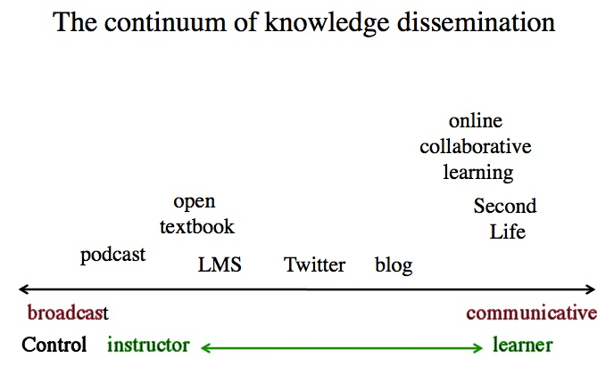

Appendix 4
Teaching in a Digital Age

Usually, before publishing an academic book or a textbook, commercial publishers will seek independent reviews at two stages of the process: when an author submits a proposal for a book, and then when the first complete draft is sent to the publisher. As well as external reviewers, the publishing company will have an in-house specialist editor who will be the main person in the decision-making process, and but even then an editor will usually take the final proposal to an internal committee or even a board meeting for final approval. Each of these stages can take up to three months, sometimes longer for the second stage, much longer if the author is required to make substantial changes before publication. Lastly, after the book is published, it may be reviewed, again independently, in academic journals specializing in the field.
Although this lengthy approval and review process can be very frustrating for an author, the process does ensure that the author gets a lot of feedback, and above all it is part of the quality control process, which is one reason why books count so much in the academic tenure and promotion process.
Self-published books need not follow any of this process, although open textbooks, such as those from OpenStax or the BCcampus open textbook project, are nearly always independently reviewed by faculty in the jurisdiction where these books may be adopted.
However, this book is somewhat different. It was written from scratch for a different market, faculty and instructors, rather than students, and it is not part of the BC government’s open textbook project that BCcampus manages. Although BCcampus offered essential technical services, they were not responsible for editing or reviewing the book.
I decided therefore to obtain three independent reviews, and, as with the BCcampus textbooks, these reviews would be published without changes as part of the book.
In approaching potential reviewers, the following criteria were used:
Obviously, for an independent review it is necessary to find reviewers who will be as objective as possible. I needed to find professionals in the subject area who had not been closely associated with me during my 40 years working in the field and who would be seen as being objective and sufficiently ‘distant’ from me and my career.
In terms of qualification, I needed reviewers who were also experts in the field of digital teaching and learning, instructional design, online learning or open education area. Although there are many who meet this criteria, they must also be seen to be independent.
Also, because the book is also targeted at faculty and instructors, it was important to find at least one reviewer who is a mainline faculty member interested in teaching and learning but who did not know or was not involved with my previous work, and who would judge it strictly from a faculty or instructor perspective.
The amount of work involved in reviewing a 500 page textbook is quite significant. Usually publishers pay a small fee for external reviewers, which no way compensates for the work involved, but at least it helps sweeten the pot. However, if I paid the reviewers as an author, that may have been seen as unduly influencing the independence of the reviewer.
I approached a total of four reviewers who met one or both of the two criteria above, and three immediately agreed to review the book. None of the reviewers I approached requested or even mentioned a fee. Each of the three who agreed to do a review submitted their review within one month of being asked. Brief descriptions of each reviewer is given as an introduction to the following reviews.
Commercial publishers, when commissioning reviewers, usually send a letter or a standard document that sets out guidelines for reviewing a book in its first, full draft before printing and distribution, to ensure both consistency between reviewers, and to identify to reviewers what the publisher is looking for. Although sometimes the publishing editor will require responses to elements that are specific to a particular book, there are also a number of guidelines that are generic.
The situation is somewhat different for a self-published textbook, where it is the responsibility of the author to decide whether to get independent reviews and if so, to provide appropriate guidelines to the reviewers. Although I encouraged reviewers to use their own criteria, I sent them some suggested guidelines, set out below, adapted from the guidelines used by BCcampus for external reviewers of open textbooks:
Each of the book reviews is published separately, as received, in the following sections.
James Mitchell, Professor and Director of the Architectural & Environmental Engineering Program, Drexel University, Pennsylvania, USA.
Many of us recognize that much has changed, is changing, and will continue to change in our professional environment. Even those who are not so old depend on tools that didn’t exist when we were children: Google searches; shared documents, analytic tools, simulations, videos and the not-so-lowly cell phone. We suspect those changes should be reflected in who, what, and how we teach. Teaching in a Digital Age is Dr. Tony Bates’ field guide for those wishing to explore this new continent. Perhaps in a hundred years there will be the same retrospective guffaws that we experience when reading of early European opinions of the Americas they’d never visited or perhaps trod lightly on a sliver of the eastern shore. It’s hard, however, to imagine a better guide than Dr. Bates.
Is author credible? Can you check what he asserts? Does he present it in an organized manner? Does he have relevant experience? Has he practiced what he preached? Does this “book” exemplify the changed approach for which he argues? The answer to all of these questions is “yes.” There are some splendid “no” opinions as well. Technology will not solve all problems. Critical thinking shouldn’t be abandoned.
First, is Dr. Bates credible? It’s difficult to imagine someone with better, experience. In a career of fifty years he’s taught in elementary school, helped start the UK’s Open University, developed and taught online and blended courses, consulted worldwide. He’s written multiple academic papers and books. He’s paid his dues.
Can you check what he asserts? Yes. Wherever possible this book cites sources with active links to make checking the source easy. He’s consistent and thorough throughout.
Is the material presented in an organized manner? Yes. A review of the Table of Contents shows that he proceeds from addressing the question of change, through an examination of the nature of knowledge, on to the ways that teaching can occur both face-to-face and online, to detailed considerations of the differences between media, and finally to the methods for choosing, assessing and supporting the varied approaches. He has covered the range in a manner that allows the reader to move progressively and also to jump rapidly to an area of particular interest.
Does this document progress beyond the traditional book? Does Dr. Bates practice what he preaches? Yes. The Table of Contents (TOC) reads much like a traditional book, but he has taken advantage of the online experience. The TOC is always present in a sidebar with active links. Tony has inserted his voice in audio clips. Videos illustrate his point where appropriate. The references are links wherever possible. More subtly, but equally important, the book is a live document. It was drafted online via a blog, with readers invited to enhance the book by responding (that’s how this reviewer became involved, an engineer no less). It is presented under a Creative Commons license so that anyone may use pieces of it with appropriate attribution. Further, the online version is structured so it can evolve.
Does technology answer all questions? Where Dr. Bates long experience and strong British fundamentals enhance his approach shows most beneficially in his recognition of the importance of the teacher’s epistemological approach as well as the tradition of education. He values, as the book shows, the second order thinking represented by the abstractions of academic discourse. He understands that a belief in a behaviorist’s tabula rasa is going to produce a very different understanding of what’s important in education from that of a constructivist or connectivist. He addresses those differences and attempts valiantly to include them in the many detailed discussions of the many media now available. Although Bates doesn’t mention him I suspect he’d be very sympathetic to this reviewer’s favorite teaching reference, The Art of Teaching by Gilbert Highet (1950), written well before computer technology complicated matters.
Are There Important Topics Not Included? Yes, not surprisingly. First, there is comparatively little attention paid to what we know from good research about how the individual student learns, what motivates them, what impedes them, how to determine when they’re ready for a particular approach, and the many ways to approach the same goals. Certainly the many media he presents are vehicles to address the requirements of each student, but Bates’ focus is more on the delivery tools than on understanding the students’ needs. Is that bad? No. Had he attempted that as well, this already ample document would have been far, far longer. How Learning Works (Ambrose, Bridges, DiPietro, Lovett, Norman 2010) would be a splendid companion to Teaching in a Digital Age.
Similarly, how to change existing institutions so that they truly embrace and act on these new modes of education is minimally addressed. The explicit audience of this document is the individual instructor or graduate student, not the person with budget power. Undoubtedly this was a conscious decision since Dr. Bates has spent many years working with academic decision makers. Here he’s attempting to empower the individual, quite possibly hoping they’ll become the decision maker of the next generation.
Should you read it, and will you enjoy it? Emphatically yes if you share an unease about making elegant barouches while Mr. Ford is introducing the Model-T. Most importantly, Dr. Bates’ thinking is grounded, organized and inclusive. His writing is clear, the references abundant, the variety of examples edifying. Your efforts will be well rewarded.
Received: 7 June 2015
By Sir John Daniel, former President of the Commonwealth of Learning, former Vice Chancellor of the UK Open University, and former Assistant Director-General, Education at UNESCO, currently Senior Advisor to Academic Partnerships International and Education Master in the Beijing DeTao Masters Academy, China.
Tony Bates, one of the world’s most knowledgeable and thoughtful commentators on educational technology, has distilled the wisdom acquired over 50 years of work into this magisterial book. Although once a sceptic about Open Education Resources, he has published Teaching in a Digital Age as an open textbook through BCcampus, making this admirable work available to a global readership as a dynamic, living project.
Four features make this book stand out in the growing literature on online learning. First, it addresses cogently the changing skill and content requirements for teaching and learning in the 21st century. Second, it offers direct help to academics in a variety of institutional settings who are grappling with the challenges and opportunities of integrating technology into their teaching. Third, it provides a 50-year historical perspective on the use of technology in teaching, citing research on student use of media from the 1970s onwards that is as relevant as ever. Finally, the beautiful structure and scaffolding of this e-Textbook reflect great credit on the author and his BCcampus editorial team.
Of the book’s twelve chapters the first five address the purposes and requirements of teaching in a digital age. It begins with a discussion of the fundamental changes taking place in education, exploring contemporary structural changes in economies and societies in order to draw out the skills needed in a digital age, identify the right relationship between education and the job market and assess the impact of expanding enrolments on teaching methods. Is the nature of knowledge evolving and how should different views about it modify our approaches to teaching?
This first chapter, which notes that ‘students are probably the most changed part of higher education in the last 50 years’, sets the stage for what follows. The challenge today is to enable growing numbers of increasingly diverse students to achieve success. Attempts to reinforce elite systems by ‘dialling the clock back to the 1950s’ (Bates’ comment on current UK policy) will not serve 21st century societies well.
Chapter 2 dives into epistemology and provides a thorough and well-researched account of theories of learning: objectivism, behaviourism, cognitivism, constructivism and connectivism. It summarises lucidly the important debate about whether knowledge is changing. The author concludes that the times require more emphasis on developing the skills of applying knowledge rather than merely teaching content. But he argues that the values and goals of academic knowledge do not – and should not – change much, although the way it is represented and applied must evolve.
The strengths and weaknesses of different methods of teaching are divided helpfully between Chapter 3 on solely campus-based instruction and Chapter 4 on fully online teaching. This is the second admirable aspect of the book: it starts where people – particularly academic faculty members – really are. Especially enjoyable are the occasional scenarios – doubtless only semi-fictional – which capture, candidly and entertainingly, the tenor of conversations at dinner parties, in staff common rooms and in the privacy of homes when academics discuss the impact of technology on their work and the latest bees in their deans’ bonnets.
Bates is an acute commentator on the strengths and weaknesses of MOOCs and devotes chapter 5 to them. The ongoing media coverage of MOOCs has stimulated interest in online teaching everywhere and made them a driver of change. But they are at an early stage of maturation and have major structural limitations for developing deep or transformative learning, or for developing the high-level knowledge and skills needed in a digital age. As the design of MOOCs improves they may come to occupy a significant niche and replace some forms of traditional teaching such as large lecture classes. But the most promising applications of MOOCs may well not be in higher education but in tackling large global problems through community action.
Chapters 6 to 9 will be especially useful to those who are designing teaching for the online space. In summarising decades of research on educational technology – to which he has been a notable contributor – Bates observes that technologies are vehicles for various media, which he helps us examine in terms of their formats, symbols systems, and cultural values. Chapter 8, where he presents the SECTIONS model for media selection that he has refined over many years, is particularly compelling, while Chapter 9 explores choices of modes of delivery.
The three concluding chapters look at trends in open education, the challenge of ensuring quality and the need to support teachers and instructors in this digital age. Developments in open educational resources, open textbooks, open research and open data will be more important than MOOCs – and far more revolutionary because they will shift power from teachers to students. He defines quality as ‘teaching methods that successfully help learners develop the knowledge and skills they will require in a digital age’ and argues for newer concepts of quality that recognise and accommodate the affective or emotional aspects of learning. The design of many MOOCs and the high dropout rates in US two-year colleges new to online learning suggest that institutions are not yet following best practices or developing teaching methods that exploit the strengths of both classroom and online learning.
Finally, the author argues that we must get real about the need to train teachers for the digital age. ‘We have to move from a system of voluntary amateurism to a professional, comprehensive system of training for teaching in post-secondary education, and a modern, up-to-date curriculum for pre-service and in-service training of school teachers’. This impressive book provides a curriculum for such training. It is a splendid work, replete with engaging scenarios and lived experiences. Tony Bates shows us how to ‘walk the talk’ about teaching in a digital age.
Received: 21 June, 2015
By Leonora Zefi and the team at Digital Education Strategies, the G. Raymond Chang School of Continuing Education, Ryerson University, Toronto, Ontario, Canada
As a team dedicated to supporting instructors in using educational technology as a vehicle for instruction, our collective review of Tony Bates’ latest work, Teaching in a Digital Age, has been anchored in the practical realities of supporting pedagogical change in higher education. After decades of contributions to the evolving knowledge base and discourse around educational technology, including twelve texts related to the subject, Bates has now provided educators worldwide with the gift of a resource for moving forward in somewhat perplexing times. This book is a model in many respects. It is published in open format – an increasingly adopted, if somewhat debated, mode of knowledge dissemination with which anyone in research and education today must familiarize themselves.
Bates (2014) offers the book as a “coach” to support instructors in fostering the required “thinking and knowledge” for student success in learning environments that are increasingly impacted by technology (p. 1). The work lives up to this coaching analogy to the extent that it offers a rounded and realistic training regimen of sorts, to help strengthen the instructional design and decision making skills of instructors and educational administrators; however, just as the artifacts and content of technology-enhanced teaching must be strategically organized and presented to best support learners, Bates’ ideas and commentary require further organization and clarification to optimize their benefit to his audience.
One of the greatest strengths of Teaching in a Digital Age is that Bates “walks the talk” of active facilitation of learning rather than the passive transmission of knowledge. From the very beginning, Bates makes clear why his selected topics and stated objectives matter and how they will make a meaningful difference in the professional practice of his intended audience. To support his own work and observations, he guides readers, through references and web links, to many valuable, supplementary resources. He brings theories and concepts alive through vignette-like scenarios, practical real-world examples, and case studies from a range of institutions of higher education. Like any good facilitator, Bates presents content in a range of formats, including text and rich media such as videos, photos, diagrams and illustrations. Learning activities and reflective questions motivate readers to immediately apply Bates’ ideas to their own work and context. As such, the book is a tremendous primer in effective pedagogy for all modes of teaching and learning.
Chapters 6 to 8 of Teaching in a Digital Age guide the reader through the world of educational technology and new media. For instructors and course designers who are exploring different media to enhance their courses, these chapters are “must reads.” Bates presents his previously published SECTIONS model as a framework for when, how and why media should be used in instruction, and realistically conveys the complications that can surround its implementation. While these chapters are comprehensive and provide varied practical supports to decision making, the book would benefit from additional examination of issues such as the impact of mobile technologies on media selection and compliance requirements for accessibility.
It may be that Bates’ strategic choice of an open and transparent authoring process precipitated certain challenges to organization and clarity for the book. Prior to its official launch, the book was circulated for feedback among Bates’ colleagues and, through his blog, the wider professional community. The type of commentary emerging from these consultations, while undeniably valuable, cannot replace the adept, professional editing that typically accompanies commercial publishing. For example, after establishing a solid theoretical and practical foundation in teaching theory and methods in Chapters 1 to 4, Bates offers a full and lengthy chapter examining the unavoidable and controversial topic of Massive Open Online Courses or MOOCs (Chapter 5). There is no question that a book such as this one should acknowledge and examine this trend, given its extensive reach and impact on the field (and Bates does so throughout many of his other chapters); however, the flow of the book would be well served if some of his key messages from Chapter 5 could be redistributed where relevant throughout the book. Similarly, Chapter 9, which looks at modes of delivery, might integrate more effectively if placed earlier in the book, i.e., adjacent to the chapters on teaching methods (Chapters 3 and 4). Additionally, the “Key Takeaways” section – a very helpful feature of the book – is provided at both the beginning and the end of each chapter. Offering just one instance of this section, at the end of each chapter, might help to streamline the content. Addressing issues of sequencing and repetition such as these will enhance the overall impact of Bates’ message.
Having identified some highlights and drawbacks of the book, the fact remains that Bates has shared his singular abundance of knowledge in an engaging and accessible way. Readers who may not be familiar with his earlier publications are brought up to speed with key issues to consider in the area of educational technology, while loyal followers of his past work will find Bates’ analysis of the current state of the field to be as helpful and practical as ever. Ultimately, because of the book’s open format, readers may take from it that which best suits their own learning needs, their professional style and their teaching context. In fact, Bates states in the Introduction that there are many ways in which the book may be used. Given that Bates has acknowledged the book as a “work in progress”, some additional attention to the organization and sequencing of his materials will help to ensure that readers gain equal value from each and every element of the work.
A sign of true passion for one’s life’s work is an unfailing commitment to the advancement and evolution of the field. Tony Bates is an outstanding example of this type of passion and demonstrates it through this book and through his dedication to its continuous improvement.
Received: 26 June, 2015
There are many possible conclusions one could draw, but here are mine:
Well, this is an unfair question, partly because the photo doesn’t show all the technologies, and also because you wouldn’t know what software or services were included, but just for the record, here’s my list:
Hardware
1. Laptop computer
2. Music CD
3. Book: yes, a printed book is a technological artefact! It doesn’t have to be digital to be a technology.
4. Mobile phone
5. Satellite receiver/converter
6. Television monitor
7. DVD player
8. Apple TV box
9. Audio-visual receiver/control box with 7 channels, 1080p HDMI, Dolby and DTS format support
10. Loudspeakers (3 in picture, including a woofer, back right)
11. Remote control (one: for all equipment except computer, mobile phone and book)
Software
Almost impossible to list and unobservable anyway, but would include iTunes, iPhoto (uses photos from iPhoto library as a screen saver for the TV monitor when music is playing), digital conversion in the A/V receiver, etc., etc.
Networks
Wi-fi
Internet
Telephone
Radio
Satellite TV (could have been cable, or broadband telephone, but isn’t)
Services
Satellite broadcast television channels
Radio stations (global choice, via Sonos)
Apple TV (including Netflix and other streaming services)
Sonos music (including Deezer, a service similar to Netflix for music)
Necessary for integration
Single remote control (eHarmony)
Audio-visual receiver
Apple TV
Apple Mac Pro laptop computer
Mobile phone (controls Sonos and iTunes)
My wish for the future: one portable box, please!!!!!!!!
I think whoever owns this home entertainment system could do with a model for technology selection (OK, I’ll admit it, it’s mine). Or is it that the home entertainment industry needs to get its act together? But I digress.
My answer:
| newspaper | medium |
| printing press | technology |
| television program | medium |
| Netflix | either: technology for delivery; medium for services |
| classroom | technology |
| MOOC | medium |
| discussion forum | either: technology for the software; medium for its actual use |
Thus it can be seen that the context in which the term is used can influence its categorization.
From the list below:
1. Determine which is a medium and which a technology, or which could be both, and under what conditions.
| learning management system | either: technology as software, medium when used for course delivery |
| blog | medium (WordPress or other blog software is the technology) |
| online collaborative learning | medium |
| either, but mainly a medium | |
| Second Life | medium |
| podcast | medium |
| open textbook | medium |
2. Decide where, from your experience, each medium or technology should be placed on Figure 6.4.3. Write down why.
3. Which were easy to categorize and which difficult?
Difficult:
With both these, I gave more importance to the broadcast/communicative dimension compared with the control dimension.
Teaching in a Digital Age: Guidelines for designing teaching and learning by Dr. Tony Bates (CC BY-NC).
Photos: reproduced from the original open textbook (each figure is credited in its caption).
Design: HTML template based on work by HTML5 UP.
{kind=link}